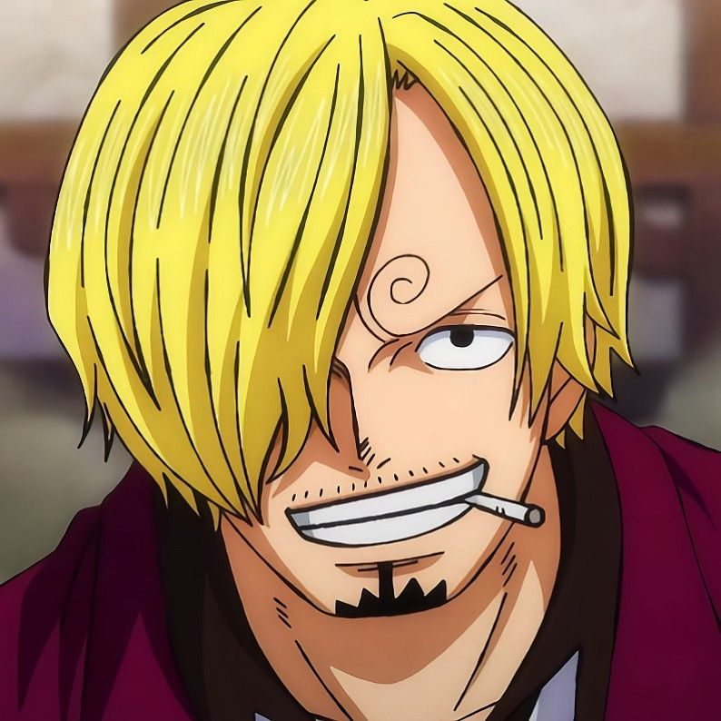
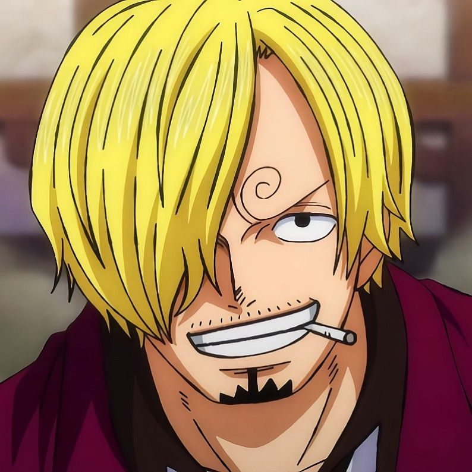

|
 |
 |
||
| Luffy | Zoro | Nami | Usopp | Sanji |
 |
||||
| Chopper | Robin | Franky | Brook | Jinbe |
| |
|
 |
||
| Luffy | Zoro | Nami | Usopp | Sanji |
| |
||||
| Chopper | Robin | Franky | Brook | Jinbe |
Luffy is a teenage young boy with fair skin, black eyes, and short, messy black hair. He has a scar under his left eye, which he earned by stabbing himself under the eye with a knife. He was severely wounded by Akainu in the Battle of Marineford, leaving an X-shaped scar on his chest.
Zoro has a stern, serious, and distanced personality, but unlike Robin, he often reacts in a goofy and exaggerated comic style due to his short-tempered and impatient attitude. On the ship, he normally either trains with weights or sleeps.
"Cat Burglar" Nami is the navigator of the Straw Hat Pirates and one of the Senior Officers of the Straw Hat Grand Fleet. She is the third member of the crew and the second to join, doing so during the Orange Town Arc. She is the adoptive sister of Nojiko after the two were orphaned and taken in by Bell-mère
 Usopp
UsoppHe's good at lying and bluffing, and he boasts a lot, but that sometimes comes in handy in battle. He's also clever with his fingers, and does well developing tools and weapons. Until Franky joined the crew, he was also in charge of repairing the ship. Usopp's personality is cowardly and negative.
Sanji is a slim, muscular, long-legged man with blond hair which he keeps brushed over one side of his face. Before the timeskip, this was the left side. After the two year timeskip, he switched his hairstyle so that it covers the right side.
Chopper is a blue-nosed reindeer who ate the Human-Human Fruit and gained human abilities. Treated like a monster after becoming a reindeer-human, it was Dr. Hiriluk who saved him. He aspired to fulfill Hiriluk's dying wish by becoming a doctor himself.
Nico Robin is a tall, slender young woman with shoulder-length black hair and eyes that have dark, wide pupils (her eyes are depicted to be brown in the manga as well as the tenth and twelfth movies; while in the anime, her eyes are depicted to be blue). She also has a long, thin, and defined nose.
Disciple to Tom, the legendary shipwright of Water Seven, Franky is the man who built the Straw Hats their new vessel, the Thousand Sunny. His dream is to craft the perfect boat and sail it to the end of the sea.
"Soul King" Brook is the musician of the Straw Hat Pirates, one of their two swordsmen and one of the Senior Officers of the Straw Hat Grand Fleet.He is the ninth member of the crew and the eighth to join, doing so at the end of the Thriller Bark Arc.
 Jinbe
JinbeIn One Piece, "Knight of the Sea" Jinbe is the helmsman of the Straw Hat Pirates. He is the tenth member of the crew and the ninth to join, doing so during the Wano Country Arc. Jinbe is a whale shark fish-man and a powerful master of Fish-Man Karate.